#HealthyAtHome: Healthy Diet
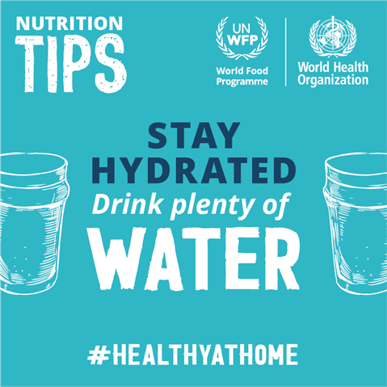
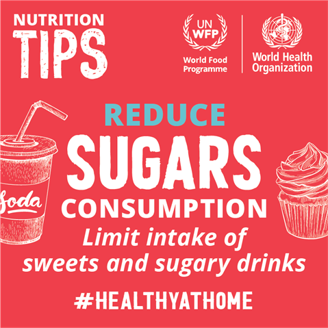
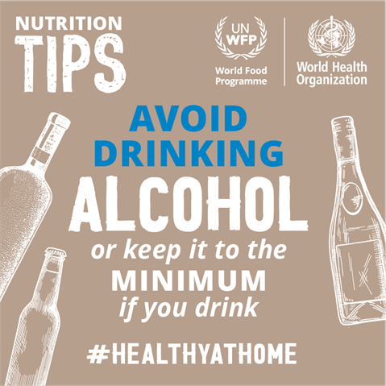
Eating a healthy diet is very important during the COVID-19 pandemic.
What we eat and drink can affect our body’s ability to prevent, fight and
recover from infections.
While no foods or dietary supplements can prevent or cure COVID-19 infection,
healthy diets are important for supporting immune systems. Good nutrition can also reduce the
likelihood of developing other health problems, including obesity, heart disease, diabetes and
some types of cancer.
For babies, a healthy diet means exclusive breastfeeding in the first six months, with the
introduction of nutritious and safe foods to complement breastmilk from age 6 months to 2 years
and beyond. For young children, a healthy and balanced diet is essential for growth and development.
For older people, it can help to ensure healthier and more active lives.
Eat a variety of food, including fruits and vegetables
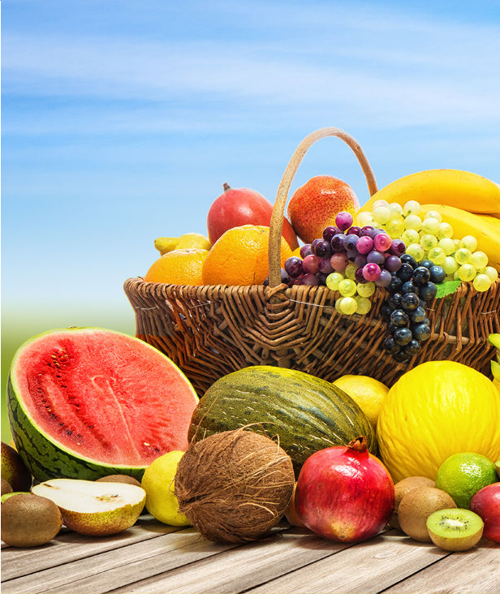
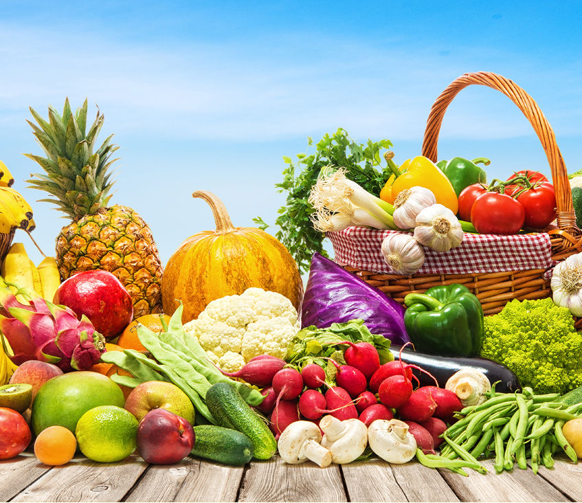
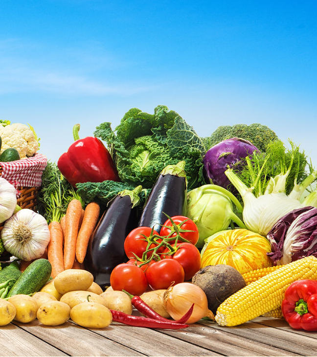
- Every day, eat a mix of wholegrains like wheat, maize and rice, legumes like lentils and beans, plenty of fresh fruit
and vegetables , with some foods from animal sources (e.g. meat, fish, eggs and milk).
- Choose wholegrain foods like unprocessed maize, millet, oats, wheat and brown rice when you can; they are rich in valuable
fibre and can help you feel full for longer.
- For snacks, choose raw vegetables, fresh fruit, and unsalted nuts.
Cut back on salt
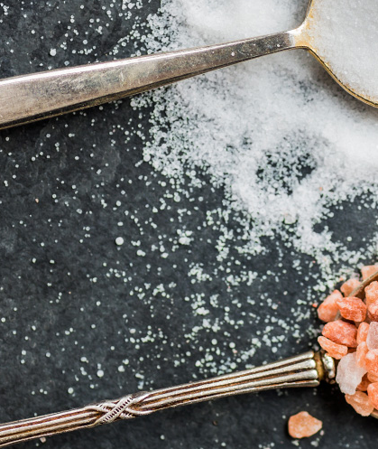
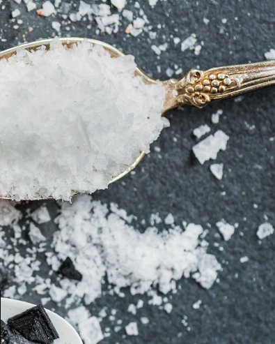
- Limit salt intake to 5 grams (equivalent to a teaspoon) a day.
- When cooking and preparing foods, use salt sparingly and reduce use of salty sauces and condiments
(like soy sauce, stock or fish sauce).
- If using canned or dried food, choose varieties of vegetables, nuts and fruit,
without added salt and sugars.
- Remove the salt shaker from the table, and experiment with fresh or dried herbs and spices for added flavor instead.
- Check the labels on food and choose products with lower sodium content.
Eat moderate amounts of fats and oils
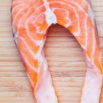
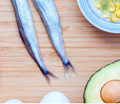
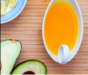
- Replace butter, ghee and lard with healthier fats like olive, soy, sunflower or corn oil when cooking.
- Choose white meats like poultry and fish which are generally lower in fats than red meat; trim meat of visible fat and limit the
consumption of processed meats.
- Select low-fat or reduced-fat versions of milk and dairy products.
- Avoid processed, baked and fried foods that contain industrially produced trans-fat.
- Try steaming or boiling instead of frying food when cooking.
Limit sugar intake
- Limit intake of sweets and sugary drinks such as fizzy drinks, fruit juices and juice drinks, liquid and powder concentrates,
flavoured water, energy and sports drinks, ready-to-drink tea and coffee and flavoured milk drinks.
- Choose fresh fruits instead of sweet snacks such as cookies, cakes and chocolate. When other dessert options are chosen,
ensure that they are low in sugar and consume small portions.
- Avoid giving sugary foods to children. Salt and sugars should not be added to complementary foods given to children under
2 years of age, and should be limited beyond that age.
Stay hydrated: Drink enough water
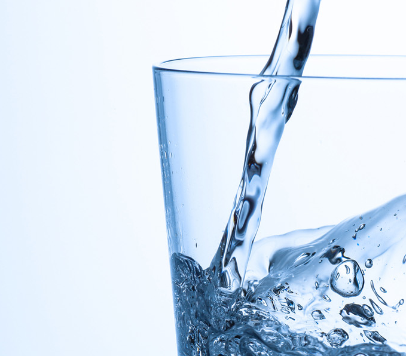
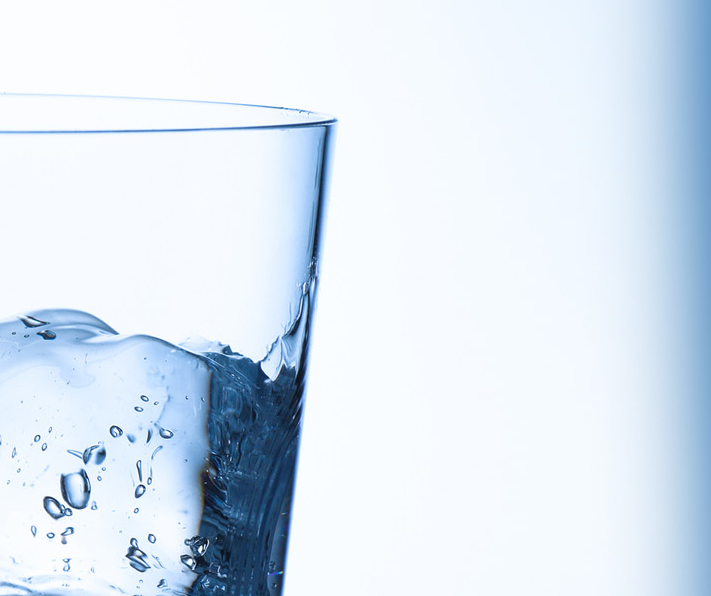
Good hydration is crucial for optimal health. Whenever available and safe for consumption, tap water is the healthiest
and cheapest drink. Drinking water instead of sugar-sweetened beverages is a simple way to limit your intake of sugar and excess calories.
Avoid hazardous and harmful alcohol use
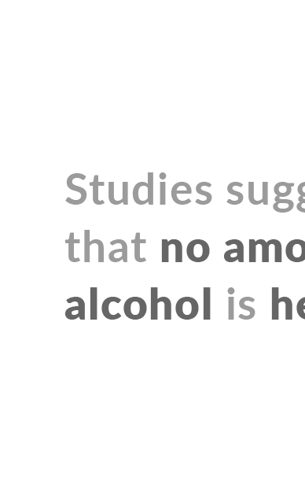
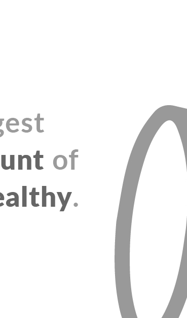
Alcohol is not a part of a healthy diet. Drinking alcohol does not protect against COVID-19 and can be dangerous.
Frequent or excessive alcohol consumption increases your immediate risk of injury, as well as causing longer-term effects like liver damage,
cancer, heart disease and mental illness. There is no safe level of alcohol consumption.
Breastfeed babies and young children
Breastmilk is the ideal food for infants. It is safe, clean and contains antibodies which help protect against many common childhood illnesses.
Babies should be breastfed exclusively during the first 6 months of life, as breast milk provides all the nutrients and fluids they need.
- From 6 months of age, breast milk should be complemented with a variety of adequate, safe and nutrient-dense foods.
Breastfeeding should continue under babies at 2 years of age or beyond.
Women with COVID-19 can breastfeed if they wish to do so and should take infection prevention and control measures.
There is no evidence that COVID-19 can be spread through contact with food or food packaging. COVID-19 is generally thought to be spread from person
to person. However, it’s always important to practice good hygiene when handling food to prevent any food-borne illnesses.
Follow WHO’s Five keys to safer food:
- Keep clean
- Separate raw and cooked
- Cook thoroughly
- Keep food at safe temperatures
- Use safe water and raw materials.
© 2021 PANDEMIC 101. ALL RIGHTS RESERVED.